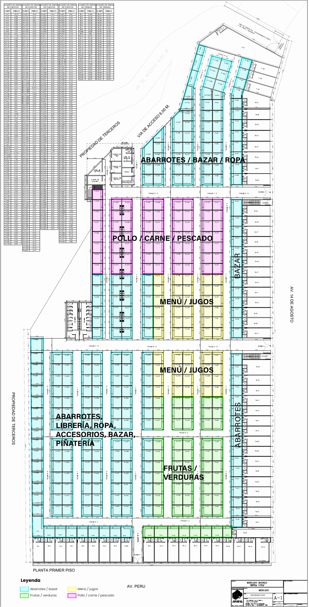

El plano
Elige tu puesto en el plano.
Este plano está conectado al inventario del mercado: cuando una unidad se separa o se libera, cambia aquí también. Busca un código, filtra por rubro y toca cualquier puesto o tienda para ver su área, su rubro y su precio.
Explora Media Luna
Busca tu espacio.
Conectando con el inventario…
La disponibilidad en vivo no está disponible ahora. El plano interactivo aparece solo en cuanto el inventario responda, sin que tengas que recargar la página.
Mientras tanto, este es el plano por rubro. No muestra la disponibilidad: escríbenos y te confirmamos por escrito qué unidades están disponibles.

La disponibilidad se confirma por escrito antes de separar. El plano muestra lo que dice el inventario de SCP en este momento; antes de que pagues cualquier cosa, te confirmamos por escrito que la unidad que elegiste sigue disponible. Abrir WhatsApp desde una ficha no reserva ni cobra nada.
Cómo leer el plano
Ámbar: disponible
La unidad figura disponible en el inventario y se puede pedir. Está en vivo: si alguien la separa, deja de verse en ámbar. Igual te la confirmamos por escrito antes de separar.
Violeta: separado
Ya tiene una separación en trámite y no se ofrece mientras tanto. Si te interesa, escríbenos y te avisamos si cambia.
Azul: no disponible
Vendida, ocupada o en revisión. No se ofrece por ahora.
P-1, P-2, P-3…
Los puestos interiores, ordenados por pasaje. Algunos están subdivididos con letra (P-61A, P-131C…).
T-1, T-2, T-3…
Las tiendas, alineadas sobre Av. Perú y Av. 14 de Agosto. Son las que tienen frente a la calle.
Sin ubicación
Algunos códigos existen en el cuadro de áreas pero todavía no tienen una ubicación inequívoca en el dibujo. No los inventamos: van en una lista aparte y su ubicación se confirma con el equipo comercial.
Por rubro: qué va en cada zona
Con el botón «Por rubro», el mismo plano se pinta según la zona de cada puesto, y un punto ámbar marca los que están disponibles. Estos son sus colores:
- Abarrotes / bazar
- Frutas / verduras
- Menú / jugos
- Pollo / carne / pescado
- Las tiendas son de rubro libre: no están asignadas a ningún sector.
En la zona de abarrotes y bazar, los rótulos del plano nombran también ropa, librería, accesorios y piñatería.
El rubro también es referencial. El rubro de cada puesto se confirma antes de separar.
Lo que hay en el mercado
| Tipo | Cuántos | Disponibles en el inventario | Área típica | Rango real |
|---|---|---|---|---|
| Puestos interiores | 423 | … | 9.45 m² | de 6.77 a 19.70 m² |
| Tiendas sobre avenida | 62 | … | 25.06 m² | de 9.86 a 120.50 m² |
| Total de unidades | 485 | … | No aplica | 5,580.71 m² de área vendible |
«Cuántos» y las áreas salen del plano vigente (lámina A-1). «Disponibles en el inventario» se lee en vivo del inventario de SCP y se confirma por escrito antes de separar.
Cada unidad tiene su propia área exacta en el plano, y esa es la que va al contrato. De los puestos, 356 miden entre 9 y 10 m²: ese es el puesto estándar del mercado.
El plano es referencial. Corresponde a la lámina A-1 de distribución del proyecto. Las medidas y la ubicación de cada unidad se verifican contra el plano vigente antes de firmar cualquier documento.
La disponibilidad cambia. Lo que ves sale del inventario de SCP, pero entre que lo miras y escribes alguien puede estar separando la misma unidad. Por eso, antes de que separes, te confirmamos por escrito que sigue disponible.
Los rubros también son referenciales. La vista por rubro muestra cómo está zonificado el mercado; el rubro de cada puesto se confirma antes de separar.
¿Viste uno que te gusta?
Tócalo en el plano y pide su separación por WhatsApp, o dinos el número y te confirmamos si sigue disponible, qué rubro le toca, cuánto mide exactamente y cuánto cuesta.
Inicio · Qué se vende · Qué estás comprando · Libro de Reclamaciones